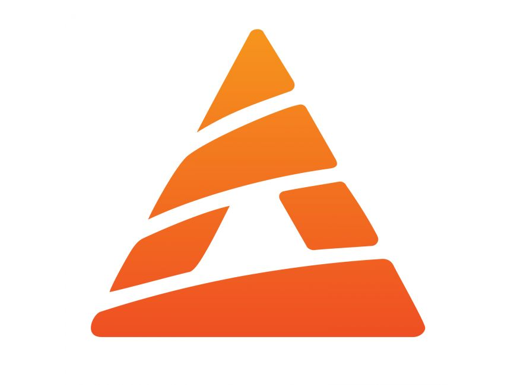
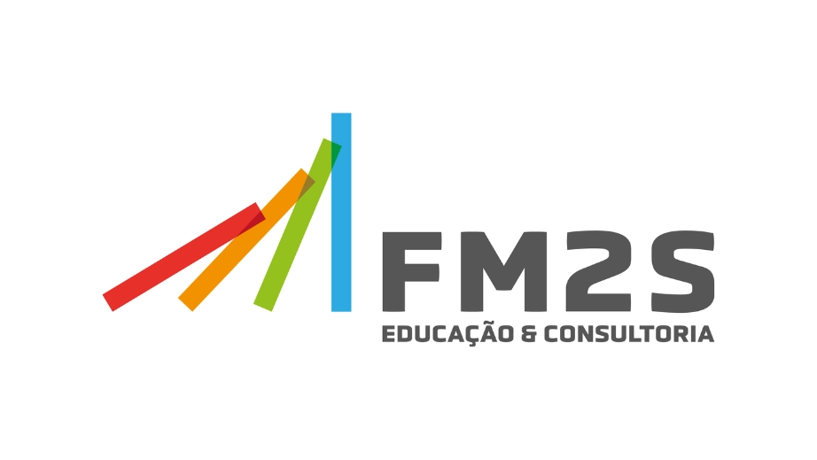
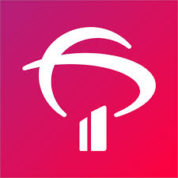

Samuel Potter Barbosa
Cachoeirinha - RS


Resumo Profissional
Experiência Profissional
Analista de Processos - Base Aérea de Canoas
out de 2024 - atual | Canoas - RS · Híbrido
- Extração de dados e conciliamento de saldos contábeis no sistema SIAFI, garantindo a organização e conferência das informações.
- Realização de auditorias e inspeções para assegurar a integridade dos registros patrimoniais.
- Registro, catalogação e controle dos bens móveis da organização.
- Acompanhamento do ciclo de vida dos bens patrimoniais (aquisição, uso, manutenção e descarte).
- Análise dos fluxos de registro, movimentação e baixa de bens patrimoniais.
- Identificação de falhas e sugestões de melhorias para otimizar os processos administrativos.
Operador de Máquinas - Prometeon Tyre Group
dez de 2021 - out de 2023 | Gravataí - RS · Presencial
- Operação de Banbury, Extrusora e Batch Off.
- Controle de qualidade e manutenção preventiva.
Assistente de Processos - Base Aérea de Canoas
mar de 2016 - mar de 2020 | Canoas - RS · Híbrido
- Classificação e arquivamento de documentos conforme normas militares e padrões de gestão documental.
- Análise e melhoria contínua dos processos de arquivamento e recuperação de informações.
- Identificação de gargalos e sugestões de automação para reduzir burocracia.
- Definição de fluxos de trabalho para garantir a segurança e eficiência na gestão documental.
Assistente Administrativo de Vendas - Papelaria Graffit
mar de 2013 - mar de 2017 | Cachoeirinha - RS · Presencial
- Atendimento ao cliente e emissão de notas fiscais.
- Controle de estoque e contato com fornecedores.
- Controle de estoque e acompanhamento de pedidos.
- Comunicação com fornecedores para reposição de mercadorias.
- Organização de arquivos e registros administrativos.
Formação Acadêmica
-
 Uniftec - Bacharel em Engenharia de Produção - Conclusão 2030
Uniftec - Bacharel em Engenharia de Produção - Conclusão 2030
-  Universidade Anhanguera - Tecnólogo em Análise e Desenvolvimento de Sistemas - Conclusão 2026
- Universitário Cachoeirinha - Técnico em Administração de Empresas - 2017
Cursos Complementares
Área da Indústria
- Lean Six Sigma - Yellow Belt  FM2S
- Kaizen - Melhoria Contínua FM2S
- Indústria 4.0 PUCRS
-
Gestão de Projetos
 Escola Virtual Gov
Escola Virtual Gov
- Introdução ao Lean FM2S
- ISO 9000 PENSAR Cursos
- Excelência Operacional FM2S
- Power BI FM2S
- Excel Intermediário  Bradesco
- Metrologia Industrial PRIME CURSOS
- Desenho Técnico Aplicado PRIME CURSOS
Área de Tecnologia
- IoT e Programação de Sensores Anhanguera
- Redes de Computadores e IoT Anhanguera
- Sensores e Microcontroladores Anhanguera
- Programação DevMedia
- HTML, CSS, SQL, MySQL DevMedia
- Administração de Banco de Dados Bradesco
- Análise de Dados no Power BI Bradesco